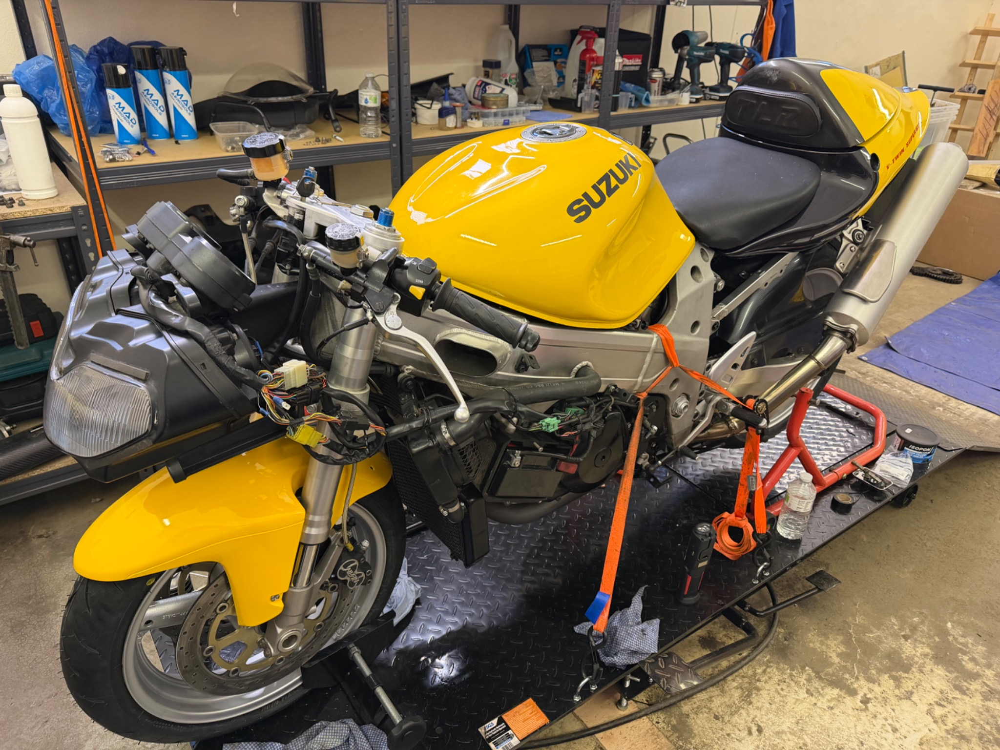
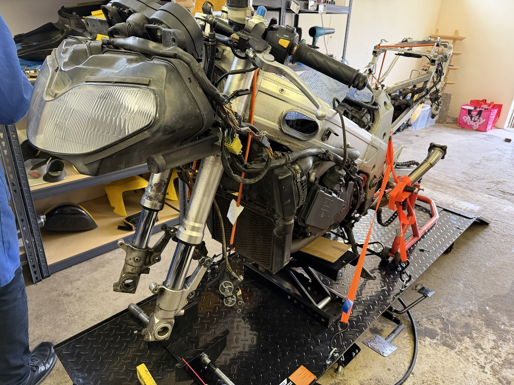
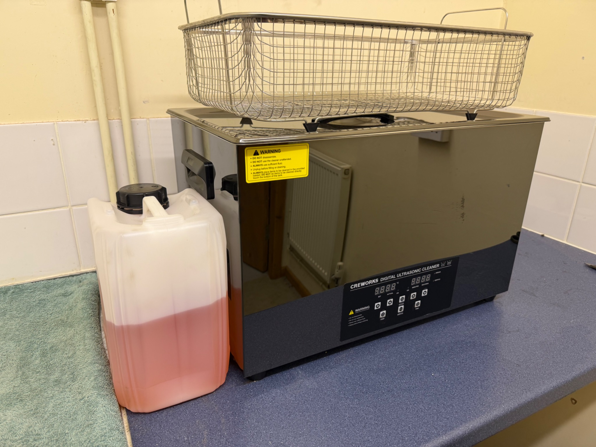
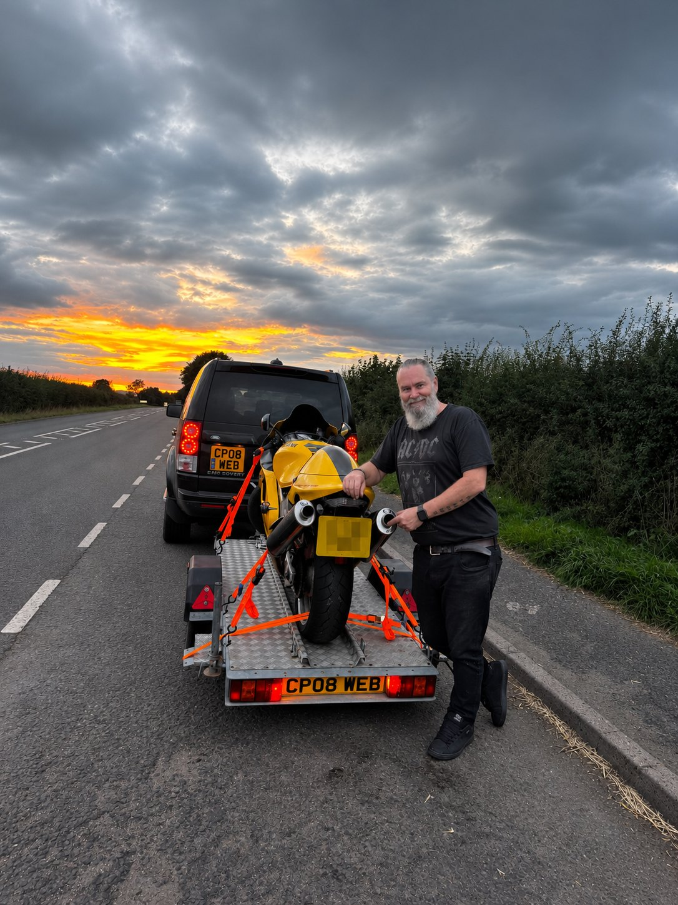

The RMC Workshop · Aston Munslow, Shropshire
YOUR BIKE. OUR WORKSHOP.
We service motorcycles and take on one-off jobs, from brake fluid changes to fork seals and chain and sprocket kits.
Request a servicing quote
Tell us what needs doing. We’ll let you know if we can take it on, when we can fit it in and what it’ll cost.

General Servicing & Maintenance
Routine maintenance and the jobs that keep your bike safe and ready for the road, including:
- Engine oil, oil filters, air filters and spark plugs
- Coolant, brake fluid and hydraulic clutch fluid changes
- Brake pads and general brake maintenance
- Fork seal replacement
- Chain and sprocket replacement, adjustment and lubrication
- Tyre pressures and general safety checks
- MOT preparation
- Tyre supply — we don't currently fit tyres

Ultrasonic Parts Cleaning
We use a 30-litre ultrasonic bath to clean motorcycle parts, including dismantled carburettors.
Parts-only service: Bring the parts in already dismantled and ready to clean. We don't strip, rebuild or set up carburettors as part of this service.

Motorcycle Transport
Bought a bike and need it collecting? Sold one and need it delivered? You can book transport on its own.
We can move bikes that don’t run. For a quote, tell us the make and model and where we’re collecting and delivering it.

What We Don't Do
We're a small independent workshop and we stick to work we're equipped to do properly. We don't offer complex fault diagnostics, internal engine repairs or engine rebuilds.
If a job falls outside what we take on, we'll tell you upfront.
Need Something Doing?
Tell us the make, model and year of your motorcycle, what you need doing, and when you'd like it done. For transport, include the collection and delivery locations.